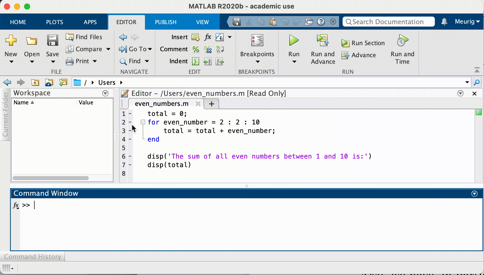

Content from Working With Variables
Last updated on 2025-01-08 | Edit this page
Estimated time: 65 minutes
Overview
Questions
- How can I store values and do simple calculations with them?
Objectives
- Navigate among important sections of the MATLAB environment.
- Assign values to variables.
- Identify what type of data is stored in MATLAB arrays.
- Read tabular data from a file into a program.
Introduction to the MATLAB GUI
Before we can start programming, we need to know a little about the MATLAB interface. Using the default setup, the MATLAB desktop contains several important sections:
- In the Command Window we can execute commands.
Commands are typed after the prompt
>>and are executed immediately after pressing Enter. - Alternatively, we can open the Editor, write our code and run it all at once. The advantage of this is that we can save our code and run it again in the same way at a later stage.
- The Workspace contains all the variables which we have loaded into memory.
- The Current Folder window shows files in the current directory, and we can change the current folder using this window.
-
Search Documentation on the top right of your
screen lets you search for functions. Suggestions for functions that
would do what you want to do will pop up. Clicking on them will open the
documentation. Another way to access the documentation is via the
helpcommand — we will return to this later.
Working with variables
In this lesson we will learn how to manipulate the inflammation dataset with MATLAB. But before we discuss how to deal with many data points, we will show how to store a single value on the computer.
We can create a new variable by
assigning a value to it using =:
At first glance nothing appears to have happened! We don’t get any output in the command window because we put a semi-colon after the variable assignment: this suppresses output, which is generally a good thing because it makes code run more quickly. Let’s run the command again without the semi-colon, and this time we have some output in the command window:
OUTPUT
weight_kg =
55A variable is just a name for a piece of data or value.
Variable names must begin with a letter, and are case sensitive. They
can contain also numbers or underscores. Examples of valid variable
names are x, f_0 or
current_temperature.
Once a variable has a value, we can print it using the
disp function:
OUTPUT
55or simply typing its name, followed by Enter
OUTPUT
weight_kg =
55Storing single values is fine, but how can we store multiple values in the same variable? We can create an array using square brackets, separating each value with a comma:
OUTPUT
a =
1 2 3In a similar way, we can create matrices using semi-colons to separate rows:
OUTPUT
b =
1 2 3
4 5 6Something to bear in mind about arrays and matrices is that all
values in an array must be of the same type e.g. all numbers or all
strings. It is however possible to convert between data types
e.g. num2str which converts numbers to a string
representation.
So once we have a numeric value stored in a variable, we can do arithmetic with it:
OUTPUT
Weight in pounds: 121That last command combines several new concepts, so let’s break it down:
The disp function takes a single argument — the value to
print. So if we want to print more than one value on a single line, we
can print an array of values (i.e. one argument), which we
create using square brackets, and recall that an array must contain
values all of the same type. In this case we convert the number to a
string so that we can print an array of characters.
We can change the value of a variable by assigning it a new one:
OUTPUT
weight_kg =
57.5Assigning a value to one variable does not change the values of other variables.
For example, we just changed the value of weight_kg from
55 to 57.5, but weight_lb hasn’t changed:
OUTPUT
weight_lb =
121Since weight_lb doesn’t “remember” where its value came
from, it isn’t automatically updated when weight_kg
changes. This is important to remember, and different from the way
spreadsheets work.
Now that we know how to assign values to variables, let’s view a list of all the variables in our workspace:
OUTPUT
Your variables are:
a b weight_kg weight_lbTo remove a variable from MATLAB, use the clear
command:
OUTPUT
Your variables are:
a b weight_kgAlternatively, we can look at the Workspace. The
workspace contains all variable names and assigned values that we
currently work with. As long as they pop up in the workspace, they are
universally available. It’s generally a good idea to keep the workspace
as clean as possible. To remove all variables from the workspace,
execute the command clear on its own.
The first two lines assign the initial values to the variables, so
mass = 47.5 and age = 122. The next line evaluates
mass * 2.0 i.e. 47.5 * 2.0 = 95, then
assigns the result to the variable mass. The last line
evaulates age - 20 i.e. 122 - 20,
then assigns the result to the variable age. So
the final values are mass = 95, and age = 102.
The key point to understand here is that the expression to the right
of the = sign is evaluated first, and the result is then
assigned to the variable specified to the left of the =
sign.
Good practices for project organisation
Before we get started, let’s create some directories to help organise this project.
Tip: Good Enough Practices for Scientific Computing
Good Enough Practices for Scientific Computing is a paper written by researchers involved with the Carpentries, which covers basic workflow skills for research computing. It recommends the following for project organization:
- Put each project in its own directory, which is named after the project.
- Put text documents associated with the project in the
docdirectory. - Put raw data and metadata in the
datadirectory, and files generated during clean-up and analysis in aresultsdirectory. - Put source code for the project in the
srcdirectory, and programs brought in from elsewhere or compiled locally in thebindirectory. - Name all files to reflect their content or function.
Our main project directory is
matlab-novice-inflammation, where we’ll save all our
scripts and function files. We already have data and
results directories here.
A crucial step is to set the current folder in MATLAB to our
project directory. Use the Current Folder window in the
MATLAB GUI to browse to your project folder
(matlab-novice-inflammation).
In order to check the current directory, we can run pwd
(print working directory). A second check we can do is to run the
ls (list) command in the Command Window to list the
contents of the working directory — we should get the following
output:
OUTPUT
data resultsReading data from files and writing data to them are essential tasks in scientific computing, and admittedly, something that we’d rather not spend a lot of time thinking about. Fortunately, MATLAB comes with a number of high-level tools to do these things efficiently, sparing us the grisly detail.
If we know what our data looks like (in this case, we have a matrix
stored as comma-separated values) and we’re unsure about what command we
want to use, we can search the documentation. Type
read matrix into the documentation toolbar. MATLAB suggests
using readmatrix. If we have a closer look at the
documentation, MATLAB also tells us, which in- and output arguments this
function has.
GNU Octave
Octave does not provide a function named readmatrix, but
the equivalent functionality (in both Octave and MATLAB) can be achieved
with dlmread for the files we will work with in this
lesson.
To load the data from our CSV file into MATLAB, type the following command into the MATLAB command window, and press Enter:
This loads the data and assigns it to a variable, patient_data. This is a good example of when to use a semi-colon to suppress output — try re-running the command without the semi-colon to find out why. You should see a wall of numbers printed, which is the data from the file.
The expression readmatrix(...) is a function call. Functions
generally need arguments to run.
In the case of the readmatrix function, we need to provide
a single argument: the name of the file we want to read data from. This
argument needs to be a character string or string, so we put it in quotes.
Now that our data is in memory, we can start doing things with it. First, let’s find out its size:
OUTPUT
ans =
60 40The output tells us that the variable patient_data
refers to a table of values that has 60 rows and 40 columns.
MATLAB stores all data in the form of multi-dimensional arrays. For example:
- Numbers, or scalars are represented as two dimensional arrays with only one row and one column, as are single characters.
- Lists of numbers, or vectors are two dimensional as well, but the value of one of the dimensions equals one. By default vectors are row vectors, meaning they have one row and as many columns as there are elements in the vector.
- Tables of numbers, or matrices are arrays with more than one column and more than one row.
- Even character strings, like sentences, are stored as an “array of characters”.
Normally, MATLAB arrays can’t store elements of different data types.
For instance, a MATLAB array can’t store both a float and a
char. To do that, you have to use a Cell
Array.
We can use the class function to find out what type of
data lives inside an array:
OUTPUT
ans =
'double'This output tells us that patient_data contains double
precision floating-point numbers. This is the default numeric data type
in MATLAB. If you want to store other numeric data types, you need to
tell MATLAB explicitly. For example, the command,
assigns the value 325 to the name x,
storing it as a 16-bit signed integer.
Key Points
- MATLAB stores data in arrays.
- Use
readmatrixto read tabular CSV data into a program.
Content from Arrays
Last updated on 2025-01-08 | Edit this page
Estimated time: 20 minutes
Overview
Questions
- How can I access subsets of data?
Objectives
- Select individual values and subsections from data.
Array indexing
Now that we understand what kind of data can be stored in an array, we need to learn the proper syntax for working with arrays in MATLAB. To do this we will begin by discussing array indexing, which is the method by which we can select one or more different elements of an array. A solid understanding of array indexing will greatly assist our ability to organize our data.
Let’s start by creating an 8-by-8 “magic” Matrix:
OUTPUT
ans =
64 2 3 61 60 6 7 57
9 55 54 12 13 51 50 16
17 47 46 20 21 43 42 24
40 26 27 37 36 30 31 33
32 34 35 29 28 38 39 25
41 23 22 44 45 19 18 48
49 15 14 52 53 11 10 56
8 58 59 5 4 62 63 1We want to access a single value from the matrix:

To do that, we must provide its index in parentheses:
OUTPUT
ans = 38Indices are provided as (row, column). So the index
(5, 6) selects the element on the fifth row and sixth
column.
An index like (5, 6) selects a single element of an
array, but we can also access sections of the matrix, or slices. To access a row of values:

we can do:
OUTPUT
ans =
32 34 35 29 28 38 39 25
Providing : as the index for a dimension selects
all elements along that dimension. So, the index
(5, :) selects the elements on row 5, and
all columns—effectively, the entire row. We can also select
multiple rows,

OUTPUT
ans =
64 2 3 61 60 6 7 57
9 55 54 12 13 51 50 16
17 47 46 20 21 43 42 24
40 26 27 37 36 30 31 33and columns:

OUTPUT
ans =
6 7 57
51 50 16
43 42 24
30 31 33
38 39 25
19 18 48
11 10 56
62 63 1To select a submatrix,

we have to take slices in both dimensions:
OUTPUT
ans =
36 30 31
28 38 39
45 19 18
We don’t have to take all the values in the slice—if we provide a stride. Let’s say we want to start with
row 2, and subsequently select every third row:

OUTPUT
ans =
9 55 54 12 13 51 50 16
32 34 35 29 28 38 39 25
8 58 59 5 4 62 63 1And we can also select values in a “checkerboard”,

by taking appropriate strides in both dimensions:
OUTPUT
ans =
2 61 6 57
26 37 30 33
15 52 11 56Slicing
A subsection of an array is called a slice. We can take slices of character strings as well:
MATLAB
>> element = 'oxygen';
>> disp(['first three characters: ', element(1:3)])
>> disp(['last three characters: ', element(4:6)])OUTPUT
first three characters: oxy
last three characters: genWhat is the value of
element(4:end)? What aboutelement(1:2:end)? Orelement(2:end - 1)?For any size array, MATLAB allows us to index with a single colon operator (
:). This can have surprising effects. For instance, compareelementwithelement(:). What issize(element)versussize(element(:))? Finally, try using the single colon on the matrixMabove:M(:). What seems to be happening when we use the single colon operator for slicing?
- Exercises using slicing
MATLAB
element(4:end) % Select all elements from 4th to last
ans =
'gen'
element(1:2:end) % Select every other element starting at first
ans =
'oye'
element(2:end-1) % Select elements starting with 2nd, until last-but-one
ans =
'xyge'- The colon operator ‘flattens’ a vector or matrix into a column
vector. The order of the elements in the resulting vector comes from
appending each column of the original array in turn. Have a look at the
order of the values in
M(:)vsM
Key Points
-
M(row, column)indices are used to select data points -
:is used to take slices of data
Content from Plotting data
Last updated on 2025-01-08 | Edit this page
Estimated time: 35 minutes
Overview
Questions
- How can I process and visualize my data?
Objectives
- Perform operations on arrays of data.
- Display simple graphs.
Analyzing patient data
Now that we know how to access data we want to compute with, we’re
ready to analyze patient_data. MATLAB knows how to perform
common mathematical operations on arrays. If we want to find the average
inflammation for all patients on all days, we can just ask for the mean
of the array:
OUTPUT
ans = 6.1487We couldn’t just do mean(patient_data) because, that
would compute the mean of each column in our table, and return
an array of mean values. The expression patient_data(:)
flattens the table into a one-dimensional array.
To get details about what a function, like mean, does
and how to use it, we can search the documentation, or use MATLAB’s
help command.
OUTPUT
mean Average or mean value.
S = mean(X) is the mean value of the elements in X if X is a vector.
For matrices, S is a row vector containing the mean value of each
column.
For N-D arrays, S is the mean value of the elements along the first
array dimension whose size does not equal 1.
mean(X,DIM) takes the mean along the dimension DIM of X.
S = mean(...,TYPE) specifies the type in which the mean is performed,
and the type of S. Available options are:
'double' - S has class double for any input X
'native' - S has the same class as X
'default' - If X is floating point, that is double or single,
S has the same class as X. If X is not floating point,
S has class double.
S = mean(...,NANFLAG) specifies how NaN (Not-A-Number) values are
treated. The default is 'includenan':
'includenan' - the mean of a vector containing NaN values is also NaN.
'omitnan' - the mean of a vector containing NaN values is the mean
of all its non-NaN elements. If all elements are NaN,
the result is NaN.
Example:
X = [1 2 3; 3 3 6; 4 6 8; 4 7 7]
mean(X,1)
mean(X,2)
Class support for input X:
float: double, single
integer: uint8, int8, uint16, int16, uint32,
int32, uint64, int64
See also median, std, min, max, var, cov, mode.We can also compute other statistics, like the maximum, minimum and standard deviation.
MATLAB
>> disp('Maximum inflammation:')
>> disp(max(patient_data(:)))
>> disp('Minimum inflammation:')
>> disp(min(patient_data(:)))
>> disp('Standard deviation:')
>> disp(std(patient_data(:)))OUTPUT
Maximum inflammation:
20
Minimum inflammation:
0
Standard deviation:
4.6148When analyzing data though, we often want to look at partial statistics, such as the maximum value per patient or the average value per day. One way to do this is to assign the data we want to a new temporary array, then ask it to do the calculation:
MATLAB
>> patient_1 = patient_data(1, :)
>> disp('Maximum inflation for patient 1:')
>> disp(max(patient_1))OUTPUT
Maximum inflation for patient 1:
18We don’t actually need to store the row in a variable of its own. Instead, we can combine the selection and the function call:
OUTPUT
ans = 18What if we need the maximum inflammation for all patients, or the average for each day? As the diagram below shows, we want to perform the operation across an axis:

To support this, MATLAB allows us to specify the dimension we want to work on. If we ask for the average across the dimension 1, we’re asking for one summary value per column, which is the average of all the rows. In other words, we’re asking for the average inflammation per day for all patients.
OUTPUT
ans =
Columns 1 through 10
0 0.4500 1.1167 1.7500 2.4333 3.1500 3.8000 3.8833 5.2333 5.5167
Columns 11 through 20
5.9500 5.9000 8.3500 7.7333 8.3667 9.5000 9.5833 10.6333 11.5667 12.3500
Columns 21 through 30
13.2500 11.9667 11.0333 10.1667 10.0000 8.6667 9.1500 7.2500 7.3333 6.5833
Columns 31 through 40
6.0667 5.9500 5.1167 3.6000 3.3000 3.5667 2.4833 1.5000 1.1333 0.5667If we average across axis 2, we’re asking for one summary value per row, which is the average of all the columns. In other words, we’re asking for the average inflammation per patient over all the days:
OUTPUT
ans =
5.4500
5.4250
6.1000
5.9000
5.5500
6.2250
5.9750
6.6500
6.6250
6.5250
6.7750
5.8000
6.2250
5.7500
5.2250
6.3000
6.5500
5.7000
5.8500
6.5500
5.7750
5.8250
6.1750
6.1000
5.8000
6.4250
6.0500
6.0250
6.1750
6.5500
6.1750
6.3500
6.7250
6.1250
7.0750
5.7250
5.9250
6.1500
6.0750
5.7500
5.9750
5.7250
6.3000
5.9000
6.7500
5.9250
7.2250
6.1500
5.9500
6.2750
5.7000
6.1000
6.8250
5.9750
6.7250
5.7000
6.2500
6.4000
7.0500
5.9000We can quickly check the size of this array:
OUTPUT
ans =
60 1The size tells us we have a 60-by-1 vector, confirming that this is the average inflammation per patient over all days in the trial.
Plotting
The mathematician Richard Hamming once said, “The purpose of computing is insight, not numbers,” and the best way to develop insight is often to visualize data. Visualization deserves an entire lecture (or course) of its own, but we can explore a few features of MATLAB here.
Let’s display a heat map of our data:
MATLAB
>> imagesc(patient_data)
>> title('Inflammation')
>> xlabel('Day of trial')
>> ylabel('Patient number')
The imagesc function represents the matrix as a color
image. Every value in the matrix is mapped to a color. Blue
regions in this heat map are low values, while yellow shows high values.
As we can see, inflammation rises and falls over a 40 day period.
It’s good practice to give the figure a title, and to
label the axes using xlabel and ylabel so that
other people can understand what it shows (including us if we return to
this plot 6 months from now).
Let’s take a look at the average inflammation over time:
MATLAB
>> plot(mean(patient_data, 1))
>> title('Daily average inflammation')
>> xlabel('Day of trial')
>> ylabel('Inflammation')
Here, we have calculated the average per day across all patients then
used the plot function to display a line graph of those
values. The result is roughly a linear rise and fall, which is
suspicious: based on other studies, we expect a sharper rise and slower
fall. Let’s have a look at two other statistics: the maximum and minimum
inflammation per day across all patients.
MATLAB
>> plot(max(patient_data, [], 1))
>> title('Maximum inflammation per day')
>> ylabel('Inflammation')
>> xlabel('Day of trial')
MATLAB
>> plot(min(patient_data, [], 1))
>> title('Minimum inflammation per day')
>> ylabel('Inflammation')
>> xlabel('Day of trial')
Like mean(), the functions max() and
min() can also operate across a specified dimension of the
matrix. However, the syntax is slightly different. To see why, run a
help on each of these functions.
From the figures, we see that the maximum value rises and falls perfectly smoothly, while the minimum seems to be a step function. Neither result seems particularly likely, so either there’s a mistake in our calculations or something is wrong with our data.
Plots
When we plot just one variable using the plot command
e.g. plot(Y) or plot(mean(patient_data, 1)),
what do the x-values represent?
The x-values are the indices of the y-data, so the first y-value is plotted against index 1, the second y-value against 2 etc.
Plots (continued)
Why are the vertical lines in our plot of the minimum inflammation per day not perfectly vertical?
MATLAB interpolates between the points on a 2D line plot.
Plots (continued)
Create a plot showing the standard deviation of the inflammation data for each day across all patients. Hint: search the documentation for standard deviation
It is often convenient to combine multiple plots into one figure
using the subplot command which plots our graphs in a grid
pattern. The first two parameters describe the grid we want to use,
while the third parameter indicates the placement on the grid.
MATLAB
>> subplot(1, 2, 1)
>> plot(max(patient_data, [], 1))
>> ylabel('max')
>> xlabel('day')
>> subplot(1, 2, 2)
>> plot(min(patient_data, [], 1))
>> ylabel('min')
>> xlabel('day')
Our work so far has convinced us that something is wrong with our first data file. We would like to check the other 11 the same way, but typing in the same commands repeatedly is tedious and error-prone. Since computers don’t get bored (that we know of), we should create a way to do a complete analysis with a single command, and then figure out how to repeat that step once for each file. These operations are the subjects of the next two lessons.
Key Points
- Use
plotto visualize data.
Content from Writing MATLAB Scripts
Last updated on 2025-01-08 | Edit this page
Estimated time: 35 minutes
Overview
Questions
- How can I save and re-use my programs?
Objectives
- Write and save MATLAB scripts.
- Save MATLAB plots to disk.
So far, we’ve typed in commands one-by-one on the command line to get MATLAB to do things for us. But what if we want to repeat our analysis? Sure, it’s only a handful of commands, and typing them in shouldn’t take us more than a few minutes. But if we forget a step or make a mistake, we’ll waste time rewriting commands. Also, we’ll quickly find ourselves doing more complex analyses, and we’ll need our results to be more easily reproducible.
In addition to running MATLAB commands one-by-one on the command
line, we can also write several commands in a script. A MATLAB
script is just a text file with a .m extension. We’ve
written commands to load data from a .csv file and display
some plots of statistics about that data. Let’s put those commands in a
script called plot_patient1.m, which we’ll save in our
current directory, matlab-novice-inflammation.
To create a new script in the current directory, we use
then we type the contents of the script:
MATLAB
patient_data = readmatrix('data/inflammation-01.csv');
% Plot average inflammation per day
figure
plot(mean(patient_data, 1))
title('Daily average inflammation')
xlabel('Day of trial')
ylabel('Inflammation')Note that we are explicitly creating a new figure window using the
figure command.
Try this on the command line:
MATLAB’s plotting commands only create a new figure window if one doesn’t already exist: the default behaviour is to reuse the current figure window as we saw in the previous episode. Explicitly creating a new figure window in the script avoids any unexpected results from plotting on top of existing figures.
You can get MATLAB to run the commands in the script by typing in the
name of the script (without the .m) in the MATLAB command
line:
The MATLAB path
MATLAB knows about files in the current directory, but if we want to run a script saved in a different location, we need to make sure that this file is visible to MATLAB. We do this by adding directories to the MATLAB path. The path is a list of directories MATLAB will search through to locate files.
To add a directory to the MATLAB path, we go to the Home
tab, click on Set Path, and then on
Add with Subfolders.... We navigate to the directory and
add it to the path to tell MATLAB where to look for our files. When you
refer to a file (either code or data), MATLAB will search all the
directories in the path to find it. Alternatively, for data files, we
can provide the relative or absolute file path.
GNU Octave
Octave has only recently gained a MATLAB-like user interface. To
change the path in any version of Octave, including command-line-only
installations, use addpath('path/to/directory')
In this script, let’s save the figures to disk as image files using
the print command. In order to maintain an organised
project we’ll save the images in the results directory:
MATLAB
% Plot average inflammation per day
figure
plot(mean(patient_data, 1))
title('Daily average inflammation')
xlabel('Day of trial')
ylabel('Inflammation')
% Save plot in 'results' folder as png image:
print('results/average','-dpng')Help text
You might have noticed that we described what we want our code to do
using the percent sign: %. This is another plus of writing
scripts: you can comment your code to make it easier to understand when
you come back to it after a while.
A comment can appear on any line, but be aware that the first line or
block of comments in a script or function is used by MATLAB as the
help text. When we use the help command,
MATLAB returns the help text. The first help text line (known
as the H1 line) typically includes the name of the
program, and a brief description. The help command works in
just the same way for our own programs as for built-in MATLAB functions.
You should write help text for all of your own scripts and
functions.
Let’s write an H1 line at the top of our script:
We can then get help for our script by running
Let’s modify our plot_patient1 script so that it creates
and saves sub-plots, rather than individual plots. As before we’ll save
the images in the results directory.
MATLAB
%PLOT_PATIENT1 Save plots of inflammation statistics to disk.
patient_data = readmatrix('data/inflammation-01.csv');
% Plot inflammation stats for first patient
figure
subplot(1, 3, 1)
plot(mean(patient_data, 1))
title('Average')
ylabel('Inflammation')
xlabel('Day')
subplot(1, 3, 2)
plot(max(patient_data, [], 1))
title('Max')
ylabel('Inflammation')
xlabel('Day')
subplot(1, 3, 3)
plot(min(patient_data, [], 1))
title('Min')
ylabel('Inflammation')
xlabel('Day')
% Save plot in 'results' directory as png image.
print('results/inflammation-01','-dpng')When saving plots to disk, it’s sometimes useful to turn off their visibility as MATLAB plots them. For example, we might not want to view (or spend time closing) the figures in MATLAB, and not displaying the figures could make the script run faster.
Let’s add a couple of lines of code to do this:
MATLAB
%PLOT_PATIENT1 Save plots of inflammation statistics to disk.
patient_data = readmatrix('data/inflammation-01.csv');
% Plot inflammation stats for first patient
figure('visible', 'off')
subplot(1, 3, 1)
plot(mean(patient_data, 1))
title('Average')
ylabel('inflammation')
xlabel('Day')
subplot(1, 3, 2)
plot(max(patient_data, [], 1))
title('Max')
ylabel('Inflammation')
xlabel('Day')
subplot(1, 3, 3)
plot(min(patient_data, [], 1))
title('Min')
ylabel('Inflammation')
xlabel('Day')
% Save plot in 'results' directory as png image.
print('results/inflammation-01','-dpng')
close()We can ask MATLAB to create an empty figure window without displaying
it by setting its 'visible' property to 'off',
like so:
When we do this, we have to be careful to manually “close” the figure after we are doing plotting on it - the same as we would “close” an actual figure window if it were open:
Key Points
- Save MATLAB code in files with a
.msuffix.
Content from Repeating With Loops
Last updated on 2025-01-08 | Edit this page
Estimated time: 50 minutes
Overview
Questions
- How can I repeat the same operations on multiple values?
Objectives
- Explain what a for loop does.
- Correctly write for loops that repeat simple commands.
- Trace changes to a loop variable as the loops runs.
- Use a for loop to process multiple files
Recall that we have to do this analysis for every one of our dozen datasets, and we need a better way than typing out commands for each one, because we’ll find ourselves writing a lot of duplicate code. Remember, code that is repeated in two or more places will eventually be wrong in at least one. Also, if we make changes in the way we analyze our datasets, we have to introduce that change in every copy of our code. To avoid all of this repetition, we have to teach MATLAB to repeat our commands, and to do that, we have to learn how to write loops.
Suppose we want to print each character in the word “lead” on a line
of its own. One way is to use four disp statements:
MATLAB
%LOOP_DEMO Demo script to explain loops
word = 'lead';
disp(word(1))
disp(word(2))
disp(word(3))
disp(word(4))OUTPUT
l
e
a
dBut this is a bad approach for two reasons:
It doesn’t scale: if we want to print the characters in a string that’s hundreds of letters long, we’d be better off typing them in.
It’s fragile: if we change
wordto a longer string, it only prints part of the data, and if we change it to a shorter one, it produces an error, because we’re asking for characters that don’t exist.
MATLAB
%LOOP_DEMO Demo script to explain loops
word = 'tin';
disp(word(1))
disp(word(2))
disp(word(3))
disp(word(4))ERROR
error: A(I): index out of bounds; value 4 out of bound 3There’s a better approach:
MATLAB
%LOOP_DEMO Demo script to explain loops
word = 'lead';
for letter = 1:4
disp(word(letter))
endOUTPUT
l
e
a
dThis improved version uses a for loop to repeat an operation—in this case, printing to the screen—once for each element in an array.
The general form of a for loop is:
for variable = collection
do things with variable
endThe for loop executes the commands in the loop body for every value in the
array collection. This value is called the loop variable, and we can call
it whatever we like. In our example, we gave it the name
letter.
We have to terminate the loop body with the end keyword,
and we can have as many commands as we like in the loop body. But, we
have to remember that they will all be repeated as many times as there
are values in collection.
Our for loop has made our code more scalable, and less fragile. There’s still one little thing about it that should bother us. For our loop to deal appropriately with shorter or longer words, we have to change the first line of our loop by hand:
MATLAB
%LOOP_DEMO Demo script to explain loops
word = 'tin';
for letter = 1:3
disp(word(letter))
endOUTPUT
t
i
nAlthough this works, it’s not the best way to write our loop:
We might update
wordand forget to modify the loop to reflect that change.We might make a mistake while counting the number of letters in
word.
Fortunately, MATLAB provides us with a convenient function to write a better loop:
MATLAB
%LOOP_DEMO Demo script to explain loops
word = 'aluminum';
for letter = 1:length(word)
disp(word(letter))
endOUTPUT
a
l
u
m
i
n
u
mThis is much more robust code, as it can deal identically with words of arbitrary length. Loops are not only for working with strings, they allow us to do repetitive calculations regardless of data type. Here’s another loop that calculates the sum of all even numbers between 1 and 10:
MATLAB
%LOOP_DEMO Demo script to explain loops
total = 0;
for even_number = 2 : 2 : 10
total = total + even_number;
end
disp('The sum of all even numbers between 1 and 10 is:')
disp(total)It’s worth tracing the execution of this little program step by step.
The debugger
We can use the MATLAB debugger to trace the execution of a program.
The first step is to set a break point by clicking
just to the right of a line number on the - symbol. A red
circle will appear — this is the break point, and when we run the
script, MATLAB will pause execution at that line.
A green arrow appears, pointing to the next line to be run. To
continue running the program one line at a time, we use the
step button.
We can then inspect variables in the workspace or by hovering the
cursor over where they appear in the code, or get MATLAB to evaluate
expressions in the command window (notice the prompt changes to
K>>).
This process is useful to check your understanding of a program, in order to correct mistakes.
This process is illustrated below: 
Since we want to sum only even numbers, the loop index
even_number starts at 2 and increases by 2 with every
iteration. When we enter the loop, total is zero - the
value assigned to it beforehand. The first time through, the loop body
adds the value of the first even number (2) to the old value of
total (0), and updates total to refer to that
new value. On the next loop iteration, even_number is 4 and
the initial value of total is 2, so the new value assigned
to total is 6. After even_number reaches the
final value (10), total is 30; since this is the end of the
range for even_number the loop finishes and the
disp statements give us the final answer.
Note that a loop variable is just a variable that’s being used to record progress in a loop. It still exists after the loop is over, and we can re-use variables previously defined as loop variables as well:
OUTPUT
10Performing Exponentiation
MATLAB uses the caret (^) to perform exponentiation:
OUTPUT
125You can also use a loop to perform exponentiation. Remember that
b^x is just b*b*b*… x times.
Let a variable b be the base of the number and
x the exponent. Write a loop to compute b^x.
Check your result for b = 4 and x = 5.
Incrementing with Loops
Write a loop that spells the word “aluminum,” adding one letter at a time:
OUTPUT
a
al
alu
alum
alumi
alumin
aluminu
aluminumLooping in Reverse
In MATLAB, the colon operator (:) accepts a stride or skip argument between the
start and stop:
OUTPUT
1 4 7 10OUTPUT
11 8 5 2Using this, write a loop to print the letters of “aluminum” in reverse order, one letter per line.
OUTPUT
m
u
n
i
m
u
l
aAnalyzing patient data from multiple files
We now have almost everything we need to process multiple data files
using a loop and the plotting code in our plot_patient1
script.
We still need to generate a list of data files to process, and then we can use a loop to repeat the analysis for each file.
We can use the dir command to return a structure
array containing the names of the files in the
data directory. Each element in this structure
array is a structure, containing information about
a single file in the form of named fields.
OUTPUT
files =
12×1 struct array with fields:
name
folder
date
bytes
isdir
datenumTo access the name field of the first file, we can use the following syntax:
OUTPUT
inflammation-01.csvTo get the modification date of the third file, we can do:
OUTPUT
26-Jul-2015 22:24:31A good first step towards processing multiple files is to write a
loop which prints the name of each of our files. Let’s write this in a
script plot_all.m which we will then develop further:
MATLAB
%PLOT_ALL Developing code to automate inflammation analysis
files = dir('data/inflammation-*.csv');
for i = 1:length(files)
file_name = files(i).name;
disp(file_name)
endOUTPUT
inflammation-01.csv
inflammation-02.csv
inflammation-03.csv
inflammation-04.csv
inflammation-05.csv
inflammation-06.csv
inflammation-07.csv
inflammation-08.csv
inflammation-09.csv
inflammation-10.csv
inflammation-11.csv
inflammation-12.csvAnother task is to generate the file names for the figures we’re
going to save. Let’s name the output file after the data file used to
generate the figure. So for the data set
inflammation-01.csv we will call the figure
inflammation-01.png. We can use the replace
command for this purpose.
The syntax for the replace command is like this:
So for example if we have the string big_shark and want
to get the string little_shark, we can execute the
following command:
OUTPUT
little_sharkRecall that we’re saving our figures to the results
directory. The best way to generate a path to a file in MATLAB is by
using the fullfile command. This generates a file path with
the correct separators for the platform you’re using (i.e. forward slash
for Linux and macOS, and backslash for Windows). This makes your code
more portable which is great for collaboration.
Putting these concepts together, we can now generate the paths for the data files, and the image files we want to save:
MATLAB
%PLOT_ALL Developing code to automate inflammation analysis
files = dir('data/inflammation-*.csv');
for i = 1:length(files)
file_name = files(i).name;
% Generate string for image name
img_name = replace(file_name, '.csv', '.png');
% Generate path to data file and image file
file_name = fullfile('data', file_name);
img_name = fullfile('results',img_name);
disp(file_name)
disp(img_name)
endOUTPUT
data/inflammation-01.csv
results/inflammation-01.png
data/inflammation-02.csv
results/inflammation-02.png
data/inflammation-03.csv
results/inflammation-03.png
data/inflammation-04.csv
results/inflammation-04.png
data/inflammation-05.csv
results/inflammation-05.png
data/inflammation-06.csv
results/inflammation-06.png
data/inflammation-07.csv
results/inflammation-07.png
data/inflammation-08.csv
results/inflammation-08.png
data/inflammation-09.csv
results/inflammation-09.png
data/inflammation-10.csv
results/inflammation-10.png
data/inflammation-11.csv
results/inflammation-11.png
data/inflammation-12.csv
results/inflammation-12.pngWe’re now ready to modify plot_all.m to actually process
multiple data files:
MATLAB
%PLOT_ALL Print statistics for all patients.
% Save plots of statistics to disk.
files = dir('data/inflammation-*.csv');
% Process each file in turn
for i = 1:length(files)
file_name = files(i).name;
% Generate strings for image names:
img_name = replace(file_name, '.csv', '.png');
% Generate path to data file and image file
file_name = fullfile('data', file_name);
img_name = fullfile('results', img_name);
patient_data = readmatrix(file_name);
% Create figures
figure('visible', 'off')
subplot(2, 2, 1)
plot(mean(patient_data, 1))
title('Average')
ylabel('Inflammation')
xlabel('Day')
subplot(2, 2, 2)
plot(max(patient_data, [], 1))
title('Max')
ylabel('Inflammation')
xlabel('Day')
subplot(2, 2, 3)
plot(min(patient_data, [], 1))
title('Min')
ylabel('Inflammation')
xlabel('Day')
print(img_name, '-dpng')
close()
endWe run the modified script using its name in the Command Window:
The first three figures output to the results directory
are as shown below:


Sure enough, the maxima of these data sets show exactly the same ramp as the first, and their minima show the same staircase structure.
We’ve now automated the analysis and have confirmed that all the data files we have looked at show the same artifact. This is what we set out to test, and now we can just call one script to do it. With minor modifications, this script could be re-used to check all our future data files.
Key Points
- Use
forto create a loop that repeats one or more operations.
Content from Making Choices
Last updated on 2025-01-08 | Edit this page
Estimated time: 40 minutes
Overview
Questions
- How can programs do different things for different data values?
Objectives
- Construct a conditional statement using if, elseif, and else
- Test for equality within a conditional statement
- Combine conditional tests using AND and OR
- Build a nested loop
Our previous lessons have shown us how to manipulate data and repeat things. However, the programs we have written so far always do the same things, regardless of what data they’re given. We want programs to make choices based on the values they are manipulating.
The tool that MATLAB gives us for doing this is called a conditional statement, and it looks like this:
OUTPUT
not greater
doneThe second line of this code uses the keyword if to tell
MATLAB that we want to make a choice. If the test that follows is true,
the body of the if (i.e., the lines between if
and else) are executed. If the test is false, the body of
the else (i.e., the lines between else and
end) are executed instead. Only one or the other is ever
executed.
Conditional statements don’t have to have an else block.
If there isn’t one, MATLAB simply doesn’t do anything if the test is
false:
MATLAB
num = 53;
disp('before conditional...')
if num > 100
disp('53 is greater than 100')
end
disp('...after conditional')OUTPUT
before conditional...
...after conditionalWe can also chain several tests together using elseif.
This makes it simple to write a script that gives the sign of a
number:
MATLAB
%CONDITIONAL_DEMO Demo script to illustrate use of conditionals
num = 53;
if num > 0
disp('num is positive')
elseif num == 0
disp('num is zero')
else
disp('num is negative')
endOne important thing to notice in the code above is that we use a
double equals sign == to test for equality rather than a
single equals sign. This is because the latter is used to mean
assignment. In our test, we want to check for the equality of
num and 0, not assign 0 to
num. This convention was inherited from C, and it does take
a bit of getting used to…
During a conditional statement, if one of the conditions is true, this marks the end of the test: no subsequent conditions will be tested and execution jumps to the end of the conditional.
Let’s demonstrate this by adding another condition which is true.
MATLAB
% Demo script to illustrate use of conditionals
num = 53;
if num > 0
disp('num is positive')
elseif num == 0
disp('num is zero')
elseif num > 50
% This block will never be executed
disp('num is greater than 50')
else
disp('num is negative')
endWe can also combine tests, using && (and) and
|| (or). && is true if both tests are
true:
OUTPUT
one part is not true|| is true if either test is true:
OUTPUT
at least one part is trueIn this case, “either” means “either or both”, not “either one or the other but not both”.
True and False Statements
The conditions we have tested above evaluate to a logical value:
true or false. However these numerical
comparison tests aren’t the only values which are true or
false in MATLAB. For example, 1 is considered
true and 0 is considered false.
In fact, any value can be used in a conditional statement.
Run the code below in order to discover which values are considered
true and which are considered false.
MATLAB
if ''
disp('empty string is true')
else
disp('empty string is false')
end
if 'foo'
disp('non empty string is true')
else
disp('non empty string is false')
end
if []
disp('empty array is true')
else
disp('empty array is false')
end
if [22.5, 1.0]
disp('non empty array is true')
else
disp('non empty array is false')
end
if [0, 0]
disp('array of zeros is true')
else
disp('array of zeros is false')
end
if true
disp('true is true')
else
disp('true is false')
endClose Enough
Write a script called near that performs a test on two
variables, and displays 1 when the first variable is within
10% of the other and 0 otherwise. Compare your
implementation with your partner’s: do you get the same answer for all
possible pairs of numbers?
Another thing to realize is that if statements can also
be combined with loops. For example, if we want to sum the positive
numbers in a list, we can write this:
MATLAB
numbers = [-5, 3, 2, -1, 9, 6];
total = 0;
for n = numbers
if n >= 0
total = total + n;
end
end
disp(['sum of positive values: ', num2str(total)])OUTPUT
sum of positive values: 20With a little extra effort, we can calculate the positive and negative sums in a loop:
MATLAB
pos_total = 0;
neg_total = 0;
for n = numbers
if n >= 0
pos_total = pos_total + n;
else
neg_total = neg_total + n;
end
end
disp(['sum of positive values: ', num2str(pos_total)])
disp(['sum of negative values: ', num2str(neg_total)])OUTPUT
sum of positive values: 20
sum of negative values: -6We can even put one loop inside another:
OUTPUT
1a
1b
2a
2b
3a
3bNesting
Will changing the order of nesting in the above loop change the output? Why? Write down the output you might expect from changing the order of the loops, then rewrite the code to test your hypothesis.
Currently, our script plot_all.m reads in data, analyzes
it, and saves plots of the results. If we would rather display the plots
interactively, we would have to remove (or comment out) the
following code:
And, we’d also have to change this line of code, from:
to:
This is not a lot of code to change every time, but it’s still work that’s easily avoided using conditionals. Here’s our script re-written to use conditionals to switch between saving plots as images and plotting them interactively:
MATLAB
%PLOT_ALL Save plots of statistics to disk.
% Use variable plot_switch to control interactive plotting
% vs saving images to disk.
% plot_switch = 0: show plots interactively
% plot_switch = 1: save plots to disk
plot_switch = 0;
files = dir('data/inflammation-*.csv');
% Process each file in turn
for i = 1:length(files)
file_name = files(i).name;
% Generate strings for image names:
img_name = replace(file_name, '.csv', '.png');
% Generate path to data file and image file
file_name = fullfile('data', file_name);
img_name = fullfile('results', img_name);
patient_data = readmatrix(file_name);
% Create figures
if plot_switch == 1
figure('visible', 'off')
else
figure('visible', 'on')
end
subplot(2, 2, 1)
plot(mean(patient_data, 1))
title('Average')
ylabel('Inflammation')
xlabel('Day')
subplot(2, 2, 2)
plot(max(patient_data, [], 1))
title('Max')
ylabel('Inflammation')
xlabel('Day')
subplot(2, 2, 3)
plot(min(patient_data, [], 1))
title('Min')
ylabel('Inflammation')
xlabel('Day')
if plot_switch == 1
print(img_name, '-dpng')
close()
end
endKey Points
- Use
ifandelseto make choices based on values in your program.
Content from Creating Functions
Last updated on 2025-01-07 | Edit this page
Estimated time: 65 minutes
Overview
Questions
- How can I teach MATLAB how to do new things?
Objectives
- Compare and contrast MATLAB function files with MATLAB scripts.
- Define a function that takes arguments.
- Test a function.
- Recognize why we should divide programs into small, single-purpose functions.
If we only had one data set to analyze, it would probably be faster to load the file into a spreadsheet and use that to plot some simple statistics. But we have twelve files to check, and may have more in future. In this lesson, we’ll learn how to write a function so that we can repeat several operations with a single command.
Let’s start by defining a function fahr_to_kelvin that
converts temperatures from Fahrenheit to Kelvin:
MATLAB
function ktemp = fahr_to_kelvin(ftemp)
%FAHR_TO_KELVIN Convert Fahrenheit to Kelvin
ktemp = ((ftemp - 32) * (5/9)) + 273.15;
endA MATLAB function must be saved in a text file with a
.m extension. The name of that file must be the same as the
function defined inside it. The name must start with a letter and cannot
contain spaces. So, you will need to save the above code in a file
called fahr_to_kelvin.m. Remember to save your m-files in
the current directory.
The first line of our function is called the function
definition, and it declares that we’re writing a function named
fahr_to_kelvin, that has a single input
parameter,ftemp, and a single output parameter,
ktemp. Anything following the function definition line is
called the body of the function. The keyword end
marks the end of the function body, and the function won’t know about
any code after end.

A function can have multiple input and output parameters if required, but isn’t required to have any of either. The general form of a function is shown in the pseudo-code below:
MATLAB
function [out1, out2] = function_name(in1, in2)
%FUNCTION_NAME Function description
% This section below is called the body of the function
out1 = something calculated;
out2 = something else;
endJust as we saw with scripts, functions must be visible to MATLAB, i.e., a file containing a function has to be placed in a directory that MATLAB knows about. The most convenient of those directories is the current working directory.
GNU Octave
In common with MATLAB, Octave searches the current working directory and the path for functions called from the command line.
We can call our function from the command line like any other MATLAB function:
OUTPUT
ans = 273.15When we pass a value, like 32, to the function, the
value is assigned to the variable ftemp so that it can be
used inside the function. If we want to return a value from the
function, we must assign that value to a variable named
ktemp-–in the first line of our function, we promised that
the output of our function would be named ktemp.
Outside of the function, the variables ftemp and
ktemp aren’t visible; they are only used by the function
body to refer to the input and output values.
This is one of the major differences between scripts and functions: a script can be thought of as automating the command line, with full access to all variables in the base workspace, whereas a function can only read and write variables from the calling workspace if they are passed as arguments — i.e. a function has its own separate workspace.
Now that we’ve seen how to convert Fahrenheit to Kelvin, it’s easy to convert Kelvin to Celsius.
MATLAB
function ctemp = kelvin_to_celsius(ktemp)
%KELVIN_TO_CELSIUS Convert from Kelvin to Celcius
ctemp = ktemp - 273.15;
endAgain, we can call this function like any other:
OUTPUT
ans = -273.15What about converting Fahrenheit to Celsius? We could write out the formula, but we don’t need to. Instead, we can compose the two functions we have already created:
MATLAB
function ctemp = fahr_to_celsius(ftemp)
%FAHR_TO_CELSIUS Convert Fahrenheit to Celcius
ktemp = fahr_to_kelvin(ftemp);
ctemp = kelvin_to_celsius(ktemp);
endCalling this function,
we get, as expected:
OUTPUT
ans = 0This is our first taste of how larger programs are built: we define basic operations, then combine them in ever-larger chunks to get the effect we want. Real-life functions will usually be larger than the ones shown here—typically half a dozen to a few dozen lines—but they shouldn’t ever be much longer than that, or the next person who reads it won’t be able to understand what’s going on.
Concatenating in a Function
In MATLAB, we concatenate strings by putting them into an array or
using the strcat function:
OUTPUT
abracadabraOUTPUT
abWrite a function called fence that has two parameters,
original and wrapper and adds
wrapper before and after original:
OUTPUT
*name*OUTPUT
259.8167
278.1500
273.1500
0ktemp is 0 because the function
fahr_to_kelvin has no knowledge of the variable
ktemp which exists outside of the function.
Once we start putting things in functions so that we can re-use them, we need to start testing that those functions are working correctly. To see how to do this, let’s write a function to center a dataset around a particular value:
We could test this on our actual data, but since we don’t know what the values ought to be, it will be hard to tell if the result was correct, Instead, let’s create a matrix of 0’s, and then center that around 3:
OUTPUT
ans =
3 3
3 3That looks right, so let’s try out center function on
our real data:
It’s hard to tell from the default output whether the result is correct–this is often the case when working with fairly large arrays–but, there are a few simple tests that will reassure us.
Let’s calculate some simple statistics:
OUTPUT
0.00000 6.14875 20.00000And let’s do the same after applying our center function
to the data:
OUTPUT
-6.1487 -0.0000 13.8513That seems almost right: the original mean was about 6.1, so the lower bound from zero is now about -6.1. The mean of the centered data isn’t quite zero–we’ll explore why not in the challenges–but it’s pretty close. We can even go further and check that the standard deviation hasn’t changed:
OUTPUT
5.3291e-15The difference is very small. It’s still possible that our function is wrong, but it seems unlikely enough that we should probably get back to doing our analysis. We have one more task first, though: we should write some documentation for our function to remind ourselves later what it’s for and how to use it.
MATLAB
function out = center(data, desired)
%CENTER Center data around a desired value.
%
% center(DATA, DESIRED)
%
% Returns a new array containing the values in
% DATA centered around the value.
out = (data - mean(data(:))) + desired;
endComment lines immediately below the function definition line are
called “help text”. Typing help function_name brings up the
help text for that function:
OUTPUT
Center Center data around a desired value.
center(DATA, DESIRED)
Returns a new array containing the values in
DATA centered around the value.Testing a Function
Write a function called
normalisethat takes an array as input and returns an array of the same shape with its values scaled to lie in the range 0.0 to 1.0. (If L and H are the lowest and highest values in the input array, respectively, then the function should map a value v to (v - L)/(H - L).) Be sure to give the function a comment block explaining its use.Run
help linspaceto see how to uselinspaceto generate regularly-spaced values. Use arrays like this to test yournormalisefunction.
Convert a script into a function
Write a function called plot_dataset which plots the
three summary graphs (max, min, std) for a given inflammation data
file.
The function should operate on a single data file, and should have
two parameters: file_name and plot_switch.
When called, the function should create the three graphs produced in the
previous lesson. Whether they are displayed or saved to the
results directory should be controlled by the value of
plot_switch
i.e. plot_dataset('data/inflammation-01.csv', 0) should
display the corresponding graphs for the first data set;
plot_dataset('data/inflammation-02.csv', 1) should save the
figures for the second dataset to the results
directory.
You should mostly be reusing code from the plot_all
script.
Be sure to give your function help text.
MATLAB
function plot_dataset(file_name, plot_switch)
%PLOT_DATASET Perform analysis for named data file.
% Create figures to show average, max and min inflammation.
% Display plots in GUI using plot_switch = 0,
% or save to disk using plot_switch = 1.
%
% Example:
% plot_dataset('data/inflammation-01.csv', 0)
% Generate string for image name:
img_name = replace(file_name, '.csv', '.png');
img_name = replace(img_name, 'data', 'results');
patient_data = readmatrix(file_name);
if plot_switch == 1
figure('visible', 'off')
else
figure('visible', 'on')
end
subplot(2, 2, 1)
plot(mean(patient_data, 1))
ylabel('average')
subplot(2, 2, 2)
plot(max(patient_data, [], 1))
ylabel('max')
subplot(2, 2, 3)
plot(min(patient_data, [], 1))
ylabel('min')
if plot_switch == 1
print(img_name, '-dpng')
close()
end
endAutomate the analysis for all files
Modify the plot_all script so that as it loops over the
data files, it calls the function plot_dataset for each
file in turn. Your script should save the image files to the ‘results’
directory rather than displaying the figures in the MATLAB GUI.
MATLAB
%PLOT_ALL Analyse all inflammation datasets
% Create figures to show average, max and min inflammation.
% Save figures to 'results' directory.
files = dir('data/inflammation-*.csv');
for i = 1:length(files)
file_name = files(i).name;
file_name = fullfile('data', file_name);
% Process each data set, saving figures to disk.
plot_dataset(file_name, 1);
endWe have now solved our original problem: we can analyze any number of data files with a single command. More importantly, we have met two of the most important ideas in programming:
Use arrays to store related values, and loops to repeat operations on them.
Use functions to make code easier to re-use and easier to understand.
Key Points
- Break programs up into short, single-purpose functions with meaningful names.
- Define functions using the
functionkeyword.
Content from Defensive Programming
Last updated on 2025-01-08 | Edit this page
Estimated time: 30 minutes
Overview
Questions
- How can I make sure my programs are correct?
Objectives
- Explain what an assertion is.
- Add assertions to programs that correctly check the program’s state.
- Correctly add precondition and postcondition assertions to functions.
- Explain what test-driven development is, and use it when creating new functions.
- Explain why variables should be initialized using actual data values rather than arbitrary constants.
- Debug code containing an error systematically.
Our previous lessons have introduced the basic tools of programming: variables and lists, file I/O, loops, conditionals, and functions. What they haven’t done is show us how to tell whether a program is getting the right answer, and how to tell if it’s still getting the right answer as we make changes to it.
To achieve that, we need to:
- write programs that check their own operation,
- write and run tests for widely-used functions, and
- make sure we know what “correct” actually means.
The good news is, doing these things will speed up our programming, not slow it down.
The first step toward getting the right answers from our programs is to assume that mistakes will happen and to guard against them. This is called defensive programming, and the most common way to do it is to add assertions to our code so that it checks itself as it runs. An assertion is simply a statement that something must be true at a certain point in a program. When MATLAB sees one, it checks the assertion’s condition. If it’s true, MATLAB does nothing, but if it’s false, MATLAB halts the program immediately and prints an error message. For example, this piece of code halts as soon as the loop encounters a value that isn’t positive:
MATLAB
numbers = [1.5, 2.3, 0.7, -0.001, 4.4];
total = 0;
for n = numbers
assert(n >= 0)
total = total + n;
endOUTPUT
error: assert (n >= 0) failedPrograms like the Firefox browser are full of assertions: 10-20% of the code they contain are there to check that the other 80-90% are working correctly. Broadly speaking, assertions fall into three categories:
- A precondition is something that must be true at the start of a function in order for it to work correctly.
- A postcondition is something that the function guarantees is true when it finishes.
- An invariant is something that is always true at a particular point inside a piece of code.
For example, suppose we are representing rectangles using an array of
four coordinates (x0, y0, x1, y1), such that (x0,y0) are
the bottom left coordinates, and (x1,y1) are the top right coordinates.
In order to do some calculations, we need to normalize the rectangle so
that it is at the origin, measures 1.0 units on its longest axis, and is
oriented so the longest axis is the y axis. Here is a function that does
that, but checks that its input is correctly formatted and that its
result makes sense:
MATLAB
function normalized = normalize_rectangle(rect)
%NORMALIZE_RECTANGLE
% Normalizes a rectangle so that it is at the origin
% measures 1.0 units on its longest axis
% and is oriented with the longest axis in the y direction:
assert(length(rect) == 4, 'Rectangle must contain 4 coordinates')
x0 = rect(1);
y0 = rect(2);
x1 = rect(3);
y1 = rect(4);
assert(x0 < x1, 'Invalid X coordinates')
assert(y0 < y1, 'Invalid Y coordinates')
dx = x1 - x0;
dy = y1 - y0;
if dx > dy
scaled = dx/dy;
upper_x = scaled;
upper_y = 1.0;
else
scaled = dx/dy;
upper_x = scaled;
upper_y = 1.0;
end
assert ((0 < upper_x) && (upper_x <= 1.0), 'Calculated upper X coordinate invalid');
assert ((0 < upper_y) && (upper_y <= 1.0), 'Calculated upper Y coordinate invalid');
normalized = [0, 0, upper_x, upper_y];
endThe three preconditions catch invalid inputs:
ERROR
Error using normalize_rectangle (line 7)
Rectangle must contain 4 coordinatesERROR
Error: Rectangle must contain 4 coordinatesERROR
error: Invalid X coordinatesThe post-conditions help us catch bugs by telling us when our calculations cannot have been correct. For example, if we normalize a rectangle that is taller than it is wide, everything seems OK:
OUTPUT
0.00000 0.00000 0.20000 1.00000but if we normalize one that’s wider than it is tall, the assertion is triggered:
ERROR
error: Calculated upper X coordinate invalidRe-reading our function, we realize that line 21 should divide
dy by dx. If we had left out the assertion at
the end of the function, we would have created and returned something
that had the right shape as a valid answer, but wasn’t. Detecting and
debugging that would almost certainly have taken more time in
the long run than writing the assertion.
But assertions aren’t just about catching errors: they also help people understand programs. Each assertion gives the person reading the program a chance to check (consciously or otherwise) that their understanding matches what the code is doing.
Most good programmers follow two rules when adding assertions to their code. The first is, fail early, fail often. The greater the distance between when and where an error occurs and when it’s noticed, the harder the error will be to debug, so good code catches mistakes as early as possible.
The second rule is, turn bugs into assertions or tests. If you made a mistake in a piece of code, the odds are good that you have made other mistakes nearby, or will make the same mistake (or a related one) the next time you change it. Writing assertions to check that you haven’t regressed (i.e., haven’t re-introduced an old problem) can save a lot of time in the long run, and helps to warn people who are reading the code (including your future self) that this bit is tricky.
Finding Conditions
Suppose you are writing a function called average that
calculates the average of the numbers in a list. What pre-conditions and
post-conditions would you write for it? Compare your answer to your
neighbor’s: can you think of an input array that will pass your tests
but not hers or vice versa?
An assertion checks that something is true at a particular point in the program. The next step is to check the overall behavior of a piece of code, i.e., to make sure that it produces the right output when it’s given a particular input. For example, suppose we need to find where two or more time series overlap. The range of each time series is represented as a pair of numbers, which are the time the interval started and ended. The output is the largest range that they all include:

Most novice programmers would solve this problem like this:
- Write a function
range_overlap. - Call it interactively on two or three different inputs.
- If it produces the wrong answer, fix the function and re-run that test.
This clearly works–after all, thousands of scientists are doing it right now–but there’s a better way:
- Write a short function for each test.
- Write a
range_overlapfunction that should pass those tests. - If
range_overlapproduces any wrong answers, fix it and re-run the test functions.
Writing the tests before writing the function they exercise is called test-driven development (TDD). Its advocates believe it produces better code faster because:
If people write tests after writing the thing to be tested, they are subject to confirmation bias, i.e., they subconsciously write tests to show that their code is correct, rather than to find errors.
Writing tests helps programmers figure out what the function is actually supposed to do.
Below are three test functions for range_overlap, but
first we need a brief aside to explain some MATLAB behaviour.
- Argument format required for
assert
assert requires a scalar logical input argument
(i.e. true (1) or false(0)).
- Testing for equality between matrices
The syntax matA == matB returns a matrix of logical
values. If we just want a true or false answer
for the whole matrix (e.g. to use with assert), we need to
use isequal instead.
Looking For Help
For a more detailed explanation, search the MATLAB help files (or
type doc eq; doc assert at the command prompt).
MATLAB
%TEST_RANGE_OVERLAP Test script for range_overlap function.
% assert(isnan(range_overlap([0.0, 1.0], [5.0, 6.0])))
% assert(isnan(range_overlap([0.0, 1.0], [1.0, 2.0])))
assert(isequal(range_overlap([0, 1.0]),[0, 1.0]))
assert(isequal(range_overlap([2.0, 3.0], [2.0, 4.0]),[2.0, 3.0]))
assert(isequal(range_overlap([0.0, 1.0], [0.0, 2.0], [-1.0, 1.0]),[0.0, 1.0]))ERROR
Undefined function or variable 'range_overlap'.
Error in test_range_overlap (line 5)
assert(isequal(range_overlap([0, 1.0]),[0, 1.0]))The error is actually reassuring: we haven’t written
range_overlap yet, so if the tests passed, it would be a
sign that someone else had and that we were accidentally using their
function.
And as a bonus of writing these tests, we’ve implicitly defined what our inputs and output look like: we expect two or more input arguments, each of which is a vector with length = 2, and we return a single vector as output.
Given that range_overlap will have to accept varying
numbers of input arguments, we need to learn how to deal with an unknown
number of input arguments before we can write
range_overlap. Consider the example below from the MATLAB
documentation:
MATLAB
function varlist(varargin)
%VARLIST Demonstrate variable number of input arguments
fprintf('Number of arguments: %d\n',nargin)
celldisp(varargin)
endOUTPUT
Number of arguments: 3
varargin{1} =
1 1 1
1 1 1
1 1 1
varargin{2} =
some text
varargin{3} =
3.1416MATLAB has a special variable varargin which can be used
as the last parameter in a function definition to represent a variable
number of inputs. Within the function varargin is a
cell array containing the input arguments, and the
variable nargin gives the number of input arguments used
during the function call. A cell array is a MATLAB data type
with indexed data containers called cells. Each cell can contain any
type of data, and is indexed using braces, or “curly brackets”
{}.
Variable number of input arguments
Using what we have just learned about varargin and
nargin fill in the blanks below to complete the first draft
of our range_overlap function.
MATLAB
function overlap = range_overlap(________)
%RANGE_OVERLAP Return common overlap among a set of [low, high] ranges.
lowest = -inf;
highest = +inf;
% Loop over input arguments
for i = 1:______
% Set range equal to each input argument
range = ________{i};
low = range(1);
high = range(2);
lowest = max(lowest, low);
highest = min(highest, high);
end
overlap = [lowest, highest];
endMATLAB
function overlap = range_overlap(varargin)
%RANGE_OVERLAP Return common overlap among a set of [low, high] ranges.
lowest = -inf;
highest = +inf;
% Loop over input arguments
for i = 1:nargin
% Set range equal to each input argument
range = varargin{i};
low = range(1);
high = range(2);
lowest = max(lowest, low);
highest = min(highest, high);
end
overlap = [lowest, highest];
endNow that we have written the function range_overlap,
when we run the tests:
we shouldn’t see an error.
Something important is missing, though. We don’t have any tests for the case where the ranges don’t overlap at all, or for the case where the ranges overlap at a point. We’ll leave this as a final assignment.
Fixing Code Through Testing
Fix range_overlap. Uncomment the two commented lines in
test_range_overlap. You’ll see that our objective is to
return a special value: NaN (Not a Number), for the
following cases:
- The ranges don’t overlap.
- The ranges overlap at their endpoints.
As you make change to the code, run test_range_overlap
regularly to make sure you aren’t breaking anything. Once you’re done,
running test_range_overlap shouldn’t raise any errors.
Hint: read about the isnan function in the help files to
make sure you understand what these first two lines are doing.
MATLAB
function overlap = range_overlap(varargin)
%RANGE_OVERLAP Return common overlap among a set of [low, high] ranges.
lowest = -inf;
highest = +inf;
% Loop over input arguments
for i = 1:nargin
% Set range equal to each input argument
range = varargin{i};
low = range(1);
high = range(2);
lowest = max(lowest, low);
highest = min(highest, high);
% Catch non-overlapping ranges
if low >= highest || high<=lowest
overlap = NaN;
return
end
end
overlap = [lowest, highest];
endDebugging strategies
Once testing has uncovered problems, the next step is to fix them. Many novices do this by making more-or-less random changes to their code until it seems to produce the right answer, but that’s very inefficient (and the result is usually only correct for the one case they’re testing). The more experienced a programmer is, the more systematically they debug, and most follow some variation on the rules explained below.
The first step in debugging something is to know what it’s supposed to do. “My program doesn’t work” isn’t good enough: in order to diagnose and fix problems, we need to be able to tell correct output from incorrect. If we can write a test case for the failing case—i.e., if we can assert that with these inputs, the function should produce that result—then we’re ready to start debugging. If we can’t, then we need to figure out how we’re going to know when we’ve fixed things.
But writing test cases for scientific software is frequently harder than writing test cases for commercial applications, because if we knew what the output of the scientific code was supposed to be, we wouldn’t be running the software: we’d be writing up our results and moving on to the next program. In practice, scientists tend to do the following:
Test with simplified data. Before doing statistics on a real data set, we should try calculating statistics for a single record, for two identical records, for two records whose values are one step apart, or for some other case where we can calculate the right answer by hand.
Test a simplified case. If our program is supposed to simulate magnetic eddies in rapidly-rotating blobs of supercooled helium, our first test should be a blob of helium that isn’t rotating, and isn’t being subjected to any external electromagnetic fields. Similarly, if we’re looking at the effects of climate change on speciation, our first test should hold temperature, precipitation, and other factors constant.
Compare to an oracle. A test oracle is something—experimental data, an older program whose results are trusted, or even a human expert—against which we can compare the results of our new program. If we have a test oracle, we should store its output for particular cases so that we can compare it with our new results as often as we like without re-running that program.
Check conservation laws. Mass, energy, and other quantities are conserved in physical systems, so they should be in programs as well. Similarly, if we are analyzing patient data, the number of records should either stay the same or decrease as we move from one analysis to the next (since we might throw away outliers or records with missing values). If “new” patients start appearing out of nowhere as we move through our pipeline, it’s probably a sign that something is wrong.
Visualize. Data analysts frequently use simple visualizations to check both the science they’re doing and the correctness of their code (just as we did in the opening lesson of this tutorial). This should only be used for debugging as a last resort, though, since it’s very hard to compare two visualizations automatically.
We can only debug something when it fails, so the second step is always to find a test case that makes it fail every time. The “every time” part is important because few things are more frustrating than debugging an intermittent problem: if we have to call a function a dozen times to get a single failure, the odds are good that we’ll scroll past the failure when it actually occurs.
As part of this, it’s always important to check that our code is “plugged in”, i.e., that we’re actually exercising the problem that we think we are. Every programmer has spent hours chasing a bug, only to realize that they were actually calling their code on the wrong data set or with the wrong configuration settings, or are using the wrong version of the software entirely. Mistakes like these are particularly likely to happen when we’re tired, frustrated, and up against a deadline, which is one of the reasons late-night (or overnight) coding sessions are almost never worthwhile.
If it takes 20 minutes for the bug to surface, we can only do three experiments an hour. That doesn’t mean we’ll get less data in more time: we’re also more likely to be distracted by other things as we wait for our program to fail, which means the time we are spending on the problem is less focused. It’s therefore critical to make it fail fast.
As well as making the program fail fast in time, we want to make it fail fast in space, i.e., we want to localize the failure to the smallest possible region of code:
The smaller the gap between cause and effect, the easier the connection is to find. Many programmers therefore use a divide and conquer strategy to find bugs, i.e., if the output of a function is wrong, they check whether things are OK in the middle, then concentrate on either the first or second half, and so on.
N things can interact in N2 different ways, so every line of code that isn’t run as part of a test means more than one thing we don’t need to worry about.
Replacing random chunks of code is unlikely to do much good. (After all, if you got it wrong the first time, you’ll probably get it wrong the second and third as well.) Good programmers therefore change one thing at a time, for a reason. They are either trying to gather more information (“is the bug still there if we change the order of the loops?”) or test a fix (“can we make the bug go away by sorting our data before processing it?”).
Every time we make a change, however small, we should re-run our tests immediately, because the more things we change at once, the harder it is to know what’s responsible for what (those N2 interactions again). And we should re-run all of our tests: more than half of fixes made to code introduce (or re-introduce) bugs, so re-running all of our tests tells us whether we have regressed.
Good scientists keep track of what they’ve done so that they can reproduce their work, and so that they don’t waste time repeating the same experiments or running ones whose results won’t be interesting. Similarly, debugging works best when we keep track of what we’ve done and how well it worked. If we find ourselves asking, “Did left followed by right with an odd number of lines cause the crash? Or was it right followed by left? Or was I using an even number of lines?” then it’s time to step away from the computer, take a deep breath, and start working more systematically.
Records are particularly useful when the time comes to ask for help. People are more likely to listen to us when we can explain clearly what we did, and we’re better able to give them the information they need to be useful.
Version control is often used to reset software to a known state
during debugging, and to explore recent changes to code that might be
responsible for bugs. In particular, most version control systems have a
blame command that will show who last changed particular
lines of code…
And speaking of help: if we can’t find a bug in 10 minutes, we should be humble and ask for help. Just explaining the problem aloud is often useful, since hearing what we’re thinking helps us spot inconsistencies and hidden assumptions.
Asking for help also helps alleviate confirmation bias. If we have just spent an hour writing a complicated program, we want it to work, so we’re likely to keep telling ourselves why it should, rather than searching for the reason it doesn’t. People who aren’t emotionally invested in the code can be more objective, which is why they’re often able to spot the simple mistakes we have overlooked.
Part of being humble is learning from our mistakes. Programmers tend to get the same things wrong over and over: either they don’t understand the language and libraries they’re working with, or their model of how things work is wrong. In either case, taking note of why the error occurred and checking for it next time quickly turns into not making the mistake at all.
And that is what makes us most productive in the long run. As the saying goes, A week of hard work can sometimes save you an hour of thought. If we train ourselves to avoid making some kinds of mistakes, to break our code into modular, testable chunks, and to turn every assumption (or mistake) into an assertion, it will actually take us less time to produce working programs, not more.
Key Points
- Use assertions to catch errors, and to document what behavior is expected.
- Write tests before code.